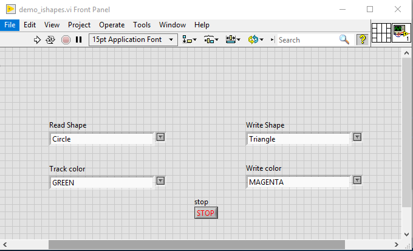
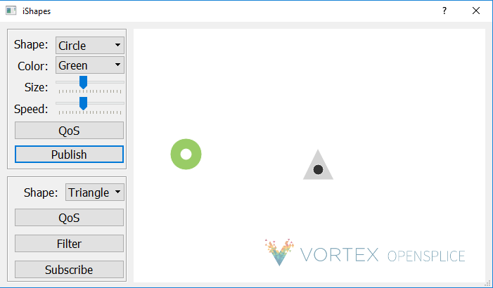

6. Demo iShapes Example¶
A simple demo iShapes example is provided to demonstrates the basic capabilities of the LabVIEW DDS integration. It displays DDS communication between LabVIEW and pure DDS applications.
The demo_ishapes.vi example (LabVIEW application) can be found using the NI Example Finder in LabVIEW:
The demo_ishapes.exe (DDS application) can be found in the following directory.
OSPL_HOME/bin/demo_ishapes.exe
6.1. Example Files¶
An explanation of what each example file does is provided below.
DDS_Data Folder
This folder contains the idl file and artifacts generated from idlpp process.
ishape.idl
- Defines the ShapeType in idl
- Used to generate the LabVIEW DDS VIs via idlpp
ishape.idl.xml
- Defines the topic descriptor from idl file
ShapeType_CicoTable.vi
- Defines the copy-in, copy-out table information for mapping IDL to LabVIEW types
ShapeType.ctl
- Defines a ShapeType cluster in LabVIEW; generated from idlpp
- The ShapeType represents a DDS topic type
- ShapeType specifies 4 properties: color, x, y, shapesize
ShapeType_Read.vi
- DDS Read ShapeType samples
ShapeType_Write.vi
- DDS Write ShapeType samples
ShapeType_Topic.vi
- DDS Register ShapeType topic
DDS_PersistentQoS_All.xml
- XML file that specifies the DDS QoS (quality of service) settings for RegisterTopic
DDS_VolatileQoS_All.xml
- XML file that specifies the DDS QoS (quality of service) settings for Reader and Writer entities
demo_ishapes.vi
- Creates a participant on the default DDS domain
- Registers a ShapeType Topic to Read and to Write to one of the three topics: Circle, Square or Triangle
- Subscribes to the shape and color from demo_ishapes.exe DDS application
- As soon as they match, demo_ishapes.vi publishes to the DDS application and follows the subscribed shape
6.2. Steps to run example¶
Steps:
Open command shell and run script to setup environment variables.
Linux
Open a Linux terminal.
Navigate to directory containing release.com file.
/INSTALLDIR/ADLINK/Vortex_v2/Device/VortexOpenSplice/6.9.x/HDE/x86_64.linux
Run release.com. (Type in “. release.com” at command line.)
Windows
Open a command prompt.
Navigate to directory containing release.bat file.
INSTALLDIR/ADLINK/Vortex_v2/Device/VortexOpenSplice/6.9.x/HDE/x86_64.win64
Run release.bat. (Type in “release.bat” at command line.)
Navigate to the directory that contains demo_ishapes.exe DDS application and run the application using the command shell used in Step 1.
Linux
/INSTALLDIR/ADLINK/Vortex_v2/Device/VortexOpenSplice/6.9.x/HDE/x86_64.linux/bin
- Run demo_ishapes.exe (Type in “./demo_ishapes.exe &” at command line)
Windows
INSTALLDIR/ADLINK/Vortex_v2/Device/VortexOpenSplice/6.9.x/HDE/x86_64.win64/bin
- Run demo_ishapes.exe (Type in “demo_ishapes.exe &” at command line)
Start LabVIEW using the SAME command shell used in Step 1. Open the demo_ishapes.vi using the NI Example Finder in LabVIEW.
NOTE: If LabVIEW and the demo_ishapes.exe application are NOT started from a command shell with the correct OSPL environment variables set, the example will not work.
In the LabVIEW demo_ishapes.vi application make the following selections:
Read Shape: Circle Track color: GREEN
Write Shape: Triangle Write color: MAGENTA

In the demo_ishapes.exe DDS application make the following selections:
Shape: Circle Color: Green Click Publish
Shape: Triangle Click Subscribe
Run the LabVIEW demo_ishapes.vi application
To stop the LabVIEW application, click on STOP on the front panel of the demo_ishapes.vi.
6.3. Output¶
LabVIEW application publishes samples to the DDS application. In the demo_ishapes.exe application, the Triangle follows the Circle.